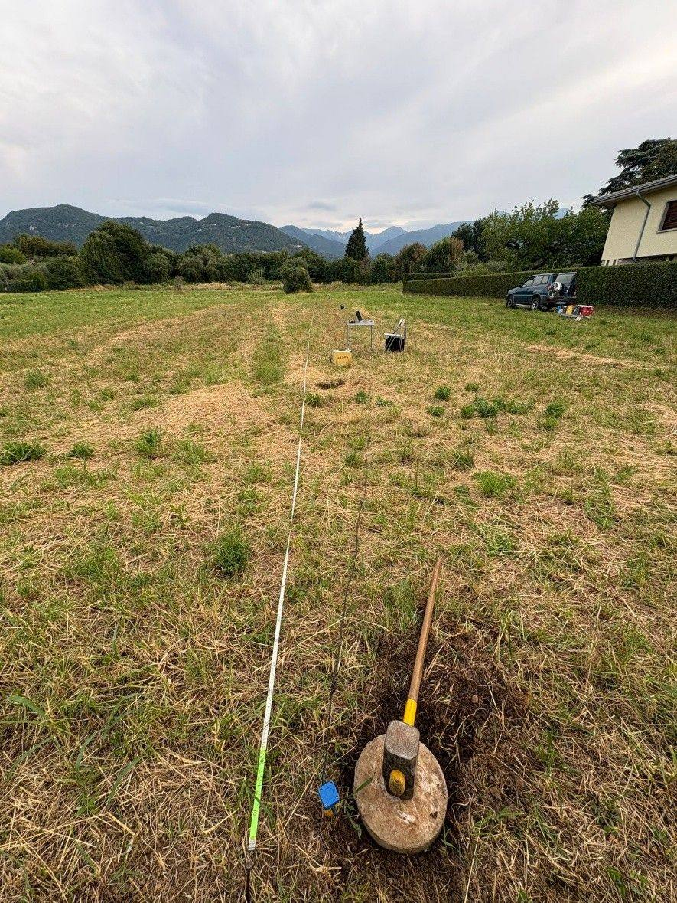
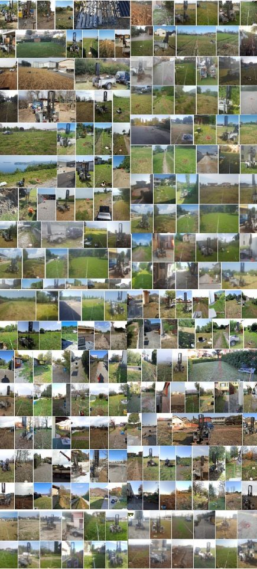

Il sottosuolo studiato con metodo, spiegato con chiarezza.
Relazioni geologiche e geotecniche, indagini sismiche e studi di invarianza idraulica per progetti edilizi, opere pubbliche e pianificazione territoriale in Lombardia.

Un unico riferimento per la parte geologica del tuo progetto
Dallo studio del programma di indagini alla consegna della relazione firmata: prove in sito, prospezioni geofisiche, elaborazione dei dati e stesura dei documenti richiesti dalla normativa.
Relazioni geologiche e geotecniche
Modello geologico e geotecnico del sito, relazione geologica, relazione geotecnica e sulle fondazioni ai sensi delle NTC 2018.
ApprofondisciIndagini sismiche
MASW 1D e 2D, microtremori HVSR e tomografia a rifrazione sismica (SRT) per classificazione del sottosuolo, VS,eq e frequenza di risonanza.
ApprofondisciProve in sito
Prove penetrometriche dinamiche, prove di permeabilità, pozzetti e scavi esplorativi, assistenza ai sondaggi.
ApprofondisciInvarianza idraulica
Studi e asseverazioni di invarianza idraulica e idrologica per permessi di costruire e piani attuativi, secondo il Regolamento Regionale della Lombardia.
ApprofondisciRisposta sismica locale e liquefazione
Analisi di RSL monodimensionale e verifiche del potenziale di liquefazione dei terreni sabbiosi saturi.
ApprofondisciTerritorio e consulenze
Componente geologica degli strumenti urbanistici, studi di compatibilità idraulica, direzione lavori, consulenze tecniche (CTU/CTP) e legali in ambito geologico-ambientale.
ApprofondisciIndagini eseguite di persona, con strumentazione propria
Prove penetrometriche, stendimenti sismici per MASW e rifrazione, misure di microtremore, prove di permeabilità e sopralluoghi geologici in cantiere.

Tre passaggi, un metodo verificabile
Inquadramento e sopralluogo
Analisi della documentazione progettuale, della cartografia geologica e di vincolo, sopralluogo e definizione del piano delle indagini.
Indagini e analisi
Esecuzione delle prove in sito e delle indagini geofisiche con strumentazione propria, elaborazione dei dati e controllo indipendente dei risultati.
Relazione e deposito
Stesura della relazione, definizione dei parametri di progetto e supporto al deposito presso gli enti competenti (SUE, sportello sismico regionale).
Lombardia orientale e area del Garda
Lo studio ha sede a Desenzano del Garda e opera principalmente nelle province di Brescia, Mantova e Verona, con incarichi in tutta la Lombardia.
Collaboro abitualmente con studi di ingegneria e architettura, imprese di costruzioni e amministrazioni comunali, integrandomi nel gruppo di progettazione fin dalle fasi preliminari.
In breve
- Sede
- Desenzano del Garda (BS)
- Iscrizione
- Ordine dei Geologi della Lombardia, Sez. A n. 1416 — Geologo Specialista
- Riferimenti
- NTC 2018, Circolare 2019, Eurocodice 7, R.R. Lombardia sull'invarianza idraulica
- Strumentazione
- Sismografo 24 bit con 24 geofoni 4,5 Hz; sismografo tridirezionale per HVSR; penetrometro dinamico
- Collaborazioni
- Studi di ingegneria e architettura, imprese, enti pubblici
Hai un progetto che richiede una relazione geologica?
Descrivimi l'intervento e la sua ubicazione: ti indico le indagini necessarie e i tempi, con un preventivo chiaro e senza impegno.